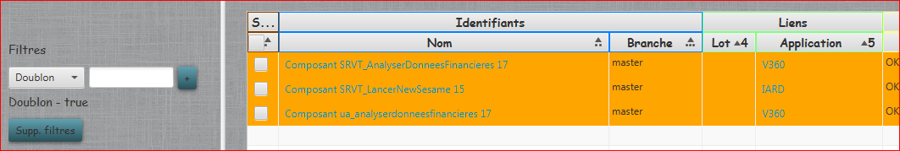

Composants
Affiche la liste de tous les composants présents dans SonarQube. Pour voir l'utilisation du menu de gauche, merci de vous reportez au chapitre BDD.

Le menu en bas permet permet d'effectuer toutes les actions de contrôle sur les composants :
- Le bonton Analyse Doublon permet de vérifier la présence de composants en doublon sur le serveur. Ceux-ci apparaissent en orange dans la liste.

Le filtre sur le valeur doublon = true, permet d'afficher uniquement les doublons.
- Le bouton Valider permet de lancer l'action choisie sur les composants selectionnés :
- Purger : Supprime le composant du serveur SonarQube et de la base de données.
- Supp. contrôle app. : Supprime le contrôle sur le code application du composant (changement profil Sonar) pour les transverses sans code application.